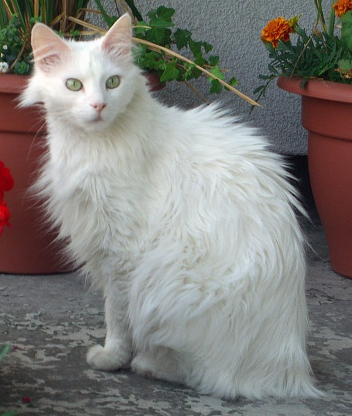
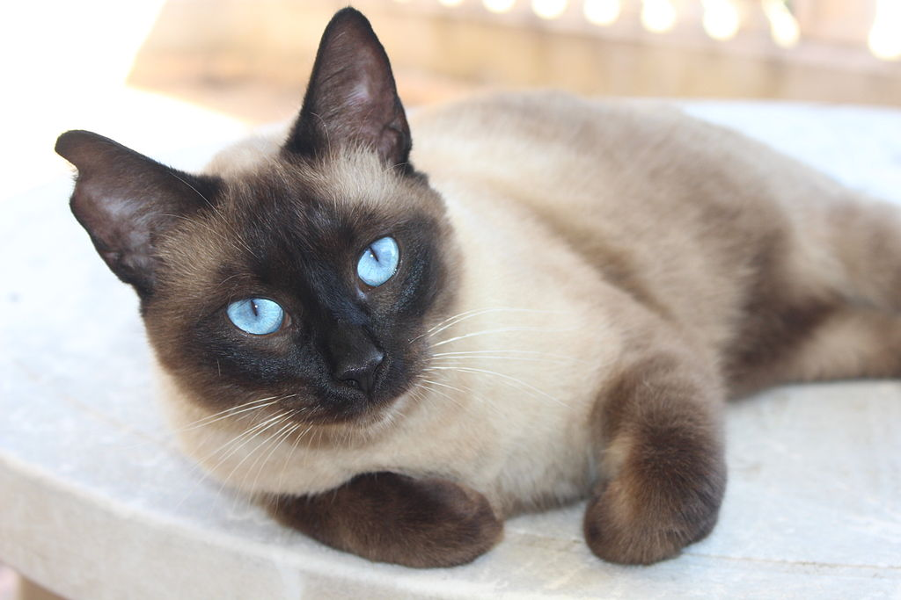

Gatos
El gato doméstico (Felis silvestris catus), llamado más comúnmente gato, y de forma coloquial minino,
michino,
michi, micho, mizo, miz, morroño o morrongo, y algunos nombres más, es un mamífero carnívoro de la
familia
Felidae. Es una subespecie domesticada por la convivencia con el ser humano.
El nombre actual en muchas lenguas proviene del latín vulgar catus. Irónicamente, catus aludía a los gatos
salvajes,
mientras que los gatos domésticos, en latín, eran llamados felis.
Como resultado de mutaciones genéticas, cruzamiento y selección artificial, hay numerosas razas. Algunas, como la
raza
sphynx o la peterbald están desprovistas de pelo; otras carecen de cola, como los gatos de la raza manx, y algunas
tienen coloraciones atípicas, como los llamados gatos azules.
Veamos algunas razas:
Gato angora turco

El angora turco o ankara kedisi es una raza de gato doméstico. Los angora son la raza más antigua, originaria de
la
región de Anatolia (Turquía)
Pese a ello, el término angora ha sido aplicado para designar a cualquier gato de pelo largo, negro y lacio, sin
importar su origen o raza. Así, muchos gatos comunes de pelo largo, o incluso mayas sin pedigrí, se denominan
"angoras".
Gato Bombay

El gato Bombay es un gato doméstico de tamaño mediano, resultado del cruzamiento entre el Burmés y el American
shorthair.
La raza Bombay, relacionada con la birmana, proviene del cruzamiento de un gato de pelo corto americano
(American
shorthair) de color negro con un Burmés cibelino, con el fin de crear un Burmés de color negro. Dicho cruce tuvo
lugar
en Estados Unidos a finales de los años 1950. El nombre de su creadora fue Nikki Horner de Kentucky. La
población de
estos gatos aumentó enormemente y hoy en día es común verlos en la mayoría de los países.
Gato siamés

El siamés moderno (también conocido como gato táctico) es una raza de gato proveniente del antiguo reino de
Siam,
actualmente Tailandia. En 1882 fueron llevados a Inglaterra y en 1890 a Estados Unidos.
Este tipo de siamés, desde 1950, fue ganando protagonismo y resultó ser el elegido por los criadores y jueces de
exposiciones felinas. Tal vez sea por esto que se acuñó el nombre "siamés" para el siamés moderno, ya que es la
variedad
que durante todas estas décadas ha participado a nivel de competición.